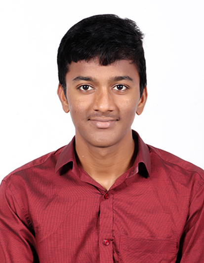

Professional Objective
To seek a position in a well-established organization that offers room for professional growth, as this
provides me ample opportunities to exhibit my skills and competencies in the chosen field.
Education
- Bachelor of Technology in Computer Science and Engineering,
KKR&KSR INSTITUTE OF TECHNOLOGY AND SCIENCES
01/2021 – present
Guntur, India.
- Higher Secondary Education,
Narayana Junior Colleges,
06/2018 – 06/2020
Guntur, India.
Skills
Programming languages:
Front-end:
Back-end:
Certifications:
- Full Stack Development by Blackbucks
- Internet Of Things by NPTEL
- AI&ML Virtual Internship by AICTE
- Java Full Stack Development by BrainOvision
Projects
Leading an IoT initiative to create a cutting-edge device, dedicated to protecting
toddlers from disease-causing germs by utilizing advanced smart sensors and real-time data analysis, resulting in a healthier and safer environment for children and
caregivers.
Organizations
Organized and led diverse community service activities, including blood donation
camps, awareness programs, and village development initiatives as an experienced
NSS Coordinator. Demonstrated effective leadership, communication, and
organizational skills to drive impactful projects and contribute to the betterment of
society.
Hobbies
Declaration
I affirm that the information in this resume is true and accurate. I understand that any false statements or
omissions may result in disqualification from consideration for employment.